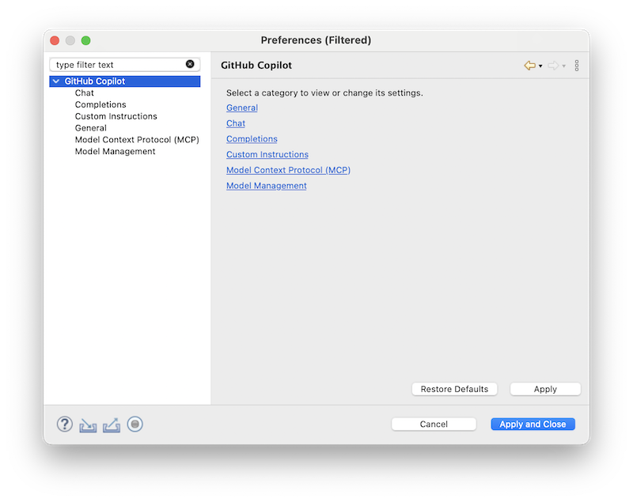
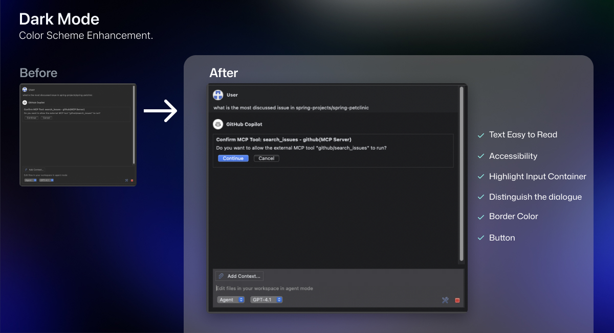
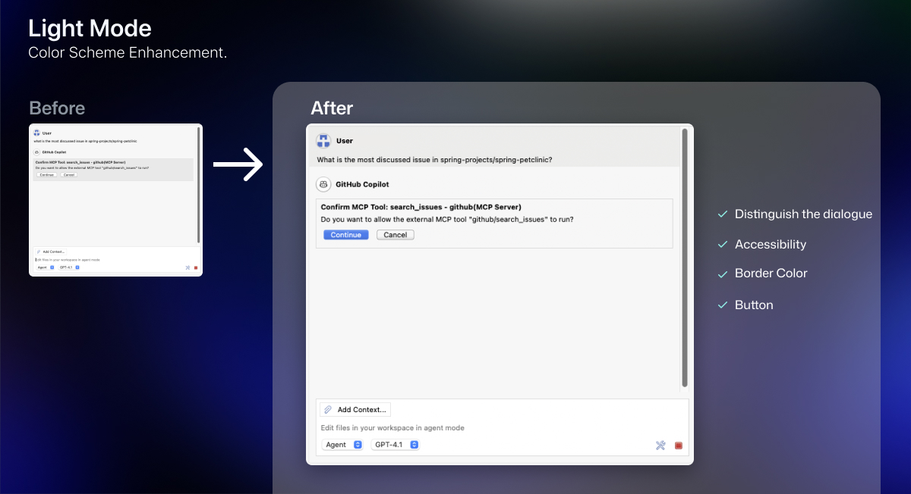
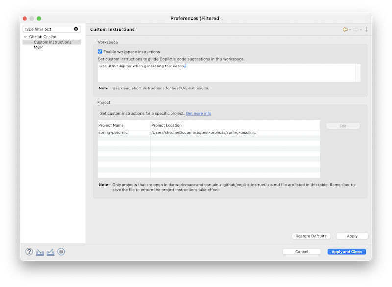
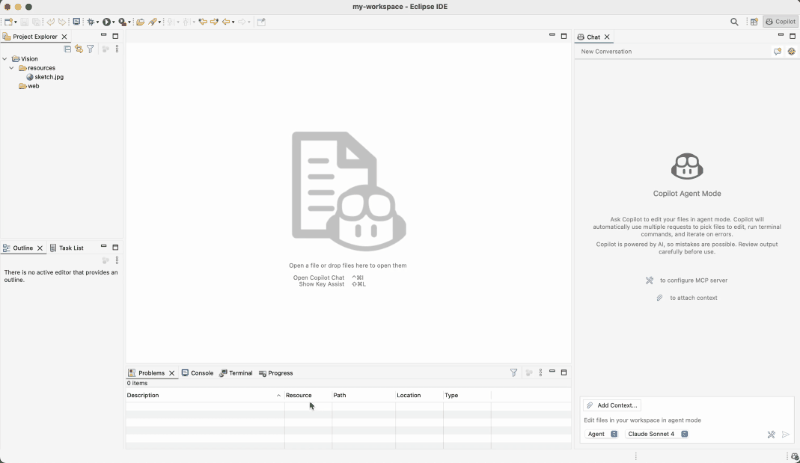
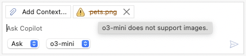
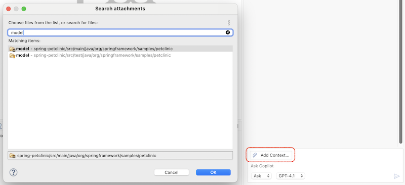
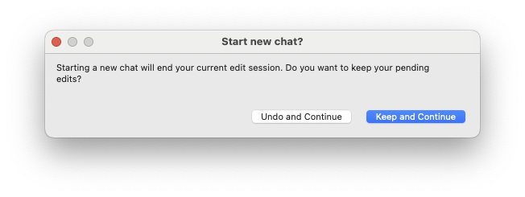
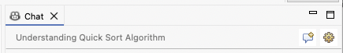

Now you can easily revisit your past conversations anytime. And you can also rename a chat to give it a meaningful title, or remove it with just a click.
Bring Your Own Key (BYOK) support is now in public preview. If you already have an API key from a supported model provider, you can connect it in just a minute and start using their models directly.
Note: BYOK is available only for individual plans - Free, Pro, and Pro+, with Editor Preview Features turned on in your Copilot Settings.
As Copilot continues to grow with exciting new features, we’ve redesigned the plug-in preferences page to make it cleaner, more intuitive, and easier for you to discover everything at a glance.

Adding context to your chats just got easier and more intuitive! You now have multiple ways to include context files:
We’ve given the chat view a fresh coat of paint — and it looks better than ever!


By splitting platform-specific binaries into separate fragments, the overall plugin size has been greatly reduced, which means faster downloads and updates.
We’ve introduced a new public API that allows other plugins to seamlessly start a new ask session in the Copilot chat view. Plug-ins can now invoke the command: com.microsoft.copilot.eclipse.commands.openChatView with two optional parameters:
com.microsoft.copilot.eclipse.commands.openChatView.inputValue: A string representing the initial content of the chat.com.microsoft.copilot.eclipse.commands.openChatView.autoSend: A boolean indicating whether to automatically submit the content.This opens up exciting possibilities for plugin developers to trigger contextual Copilot interactions directly from their tools.
Here’s how the Spring Tools plug-in leverages the new API to launch a chat session:
You can now use custom instructions to provide Copilot with additional context tailored to your work. This helps Copilot deliver more relevant and personalized assistance.
Check for more details.

You can now add images directly to the chat context. Check below example how Copilot interpret a hand-drawn layout page, and generate corresponding HTML code:

Note: Some models do not support vision capabilities. In such cases, a warning will be displayed.

In addition to images, you can now attach entire folders to enrich the chat context. This makes it easier to share structured content and collaborate more effectively.

Copilot now includes several enhancements for MCP support:
You can now configure your GitHub MCP server using OAuth. Here's a sample configuration:
{
"servers": {
"github": {
"type": "http",
"url": "https://api.githubcopilot.com/mcp/"
}
}
}The Copilot plugin will automatically disable MCP features if it is turned off in the Copilot portal: https://github.com/settings/copilot/features, ensuring better alignment with your configuration settings.
When creating a new conversation in agent mode, a confirmation dialog will now appear if there are any unhandled files in the current context. This helps prevent accidental data loss and ensures you don’t lose important changes unexpectedly.

The top banner in the chat view has been improved to enhance usability. It now displays the conversation title and includes a convenient Edit Preferences... shortcut button.
